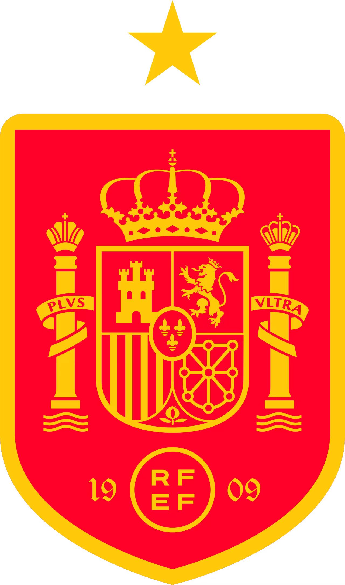

报告生成日期：2026年5月27日 · 2026美加墨世界杯
🏆 欧洲冠军再出发：2024欧洲杯冠军 · H组vs乌拉圭/沙特/佛得角 · 首次无皇马球员入选
主教练：路易斯·德拉富恩特（Luis de la Fuente）— 2024欧洲杯冠军教头
队长：罗德里（Rodri）— 曼城，2024金球奖有力竞争者
FIFA排名：约第3位
世界杯参赛次数：第17次
世界杯冠军：⭐ 1次（2010年南非）
上届（2022）成绩：16强（点球0-3负摩洛哥，三罚全失）
小组赛：H组
同组对手：乌拉圭 🇺🇾、沙特阿拉伯 🇸🇦、佛得角 🇨🇻
首战：6月15日 vs 佛得角（亚特兰大）
次战：6月21日 vs 沙特阿拉伯（亚特兰大）
末轮：6月26日 vs 乌拉圭（瓜达拉哈拉）
⚡ 无皇马球员：西班牙队史首次在世界杯大名单中没有皇马球员——巴萨8人、毕尔巴鄂3人、马竞2人、阿森纳2人
* 5月25日公布 · 6名巴萨球员创队史 · 罗德里（当世第一后腰）· 亚马尔（18岁/未来金球）
| 位置 | 球员姓名 | 英文名 | 俱乐部 | 联赛 |
|---|---|---|---|---|
| GK | 乌奈·西蒙 | Unai Simón | 毕尔巴鄂竞技 | 西甲 |
| GK | 大卫·拉亚 | David Raya | 阿森纳 | 英超 |
| GK | 霍安·加西亚 | Joan García | 巴塞罗那 | 西甲 |
| DF | 马科斯·略伦特 | Marcos Llorente | 马德里竞技 | 西甲 |
| DF | 佩德罗·波罗 | Pedro Porro | 托特纳姆热刺 | 英超 |
| DF | 埃里克·加西亚 | Eric García | 巴塞罗那 | 西甲 |
| DF | 马克·普比尔 | Marc Pubill | 巴塞罗那 | 西甲 |
| DF | 艾默里克·拉波尔特 | Aymeric Laporte | 毕尔巴鄂竞技 | 西甲 |
| DF | 保·库巴西 | Pau Cubarsí | 巴塞罗那 | 西甲 |
| DF | 马克·库库雷利亚 | Marc Cucurella | 切尔西 | 英超 |
| DF | 亚历杭德罗·格里马尔多 | Alejandro Grimaldo | 勒沃库森 | 德甲 |
| MF | 佩德里 | Pedri | 巴塞罗那 | 西甲 |
| MF | 法比安·鲁伊斯 | Fabián Ruiz | 巴黎圣日耳曼 | 法甲 |
| MF | 马丁·苏维门迪 | Martín Zubimendi | 皇家社会 | 西甲 |
| MF | 加维 | Gavi | 巴塞罗那 | 西甲 |
| MF | ⭐ 罗德里 (C) | Rodri | 曼城 | 英超 |
| MF | 亚历克斯·巴埃纳 | Álex Baena | 比利亚雷亚尔 | 西甲 |
| MF | 米克尔·梅里诺 | Mikel Merino | 阿森纳 | 英超 |
| FW | 米克尔·奥亚萨瓦尔 | Mikel Oyarzabal | 皇家社会 | 西甲 |
| FW | 达尼·奥尔莫 | Dani Olmo | 巴塞罗那 | 西甲 |
| FW | 尼科·威廉姆斯 | Nico Williams | 毕尔巴鄂竞技 | 西甲 |
| FW | 耶雷米·皮诺 | Yeremy Pino | 比利亚雷亚尔 | 西甲 |
| FW | 费兰·托雷斯 | Ferran Torres | 巴塞罗那 | 西甲 |
| FW | 博尔哈·伊格莱西亚斯 | Borja Iglesias | 塞尔塔 | 西甲 |
| FW | 维克托·穆尼奥斯 | Víctor Muñoz | 奥萨苏纳 | 西甲 |
| FW | ⭐ 拉明·亚马尔 | Lamine Yamal | 巴塞罗那 | 西甲 |
🔥 中场天团：罗德里（当世第一后腰/金球候选）+ 佩德里（巴萨大脑）+ 加维（铁血斗士）+ 法比安（欧国杯最佳中场）+ 梅里诺（阿森纳）+ 苏维门迪（皇家社会）——7名世界级中场 | 亚马尔（18岁/2024欧洲杯最佳年轻球员）是锋线核心
| 指标 | 数据 |
|---|---|
| 世界级/准世界级 | 7-8人（罗德里、亚马尔、佩德里、加维、尼科·威廉姆斯、法比安·鲁伊斯、拉波尔特、库巴西） |
| 金球奖候选 | 罗德里（2024前五）、亚马尔（未来金球） |
| 2024欧洲杯冠军成员 | 16人 |
西班牙的中场配置是本届世界杯上当之无愧的"世界第一"。罗德里是当今足坛最好的防守型中场——他的存在让西班牙在控球和防守之间实现了完美的平衡。佩德里和加维的"巴萨双核"提供了创造力和硬度，法比安·鲁伊斯是2024欧洲杯最佳中场，梅里诺和苏维门迪在任何其他球队都能打首发。进攻端，18岁的拉明·亚马尔已经是巴塞罗那的绝对核心——他的盘带、创造力和进球能力让他成为"未来金球奖"的热门人选。尼科·威廉姆斯在2024欧洲杯决赛中的表现奠定了他的世界级边锋地位
三条线中中场是绝对强点（7人），后防8人配置合理但缺少世界级中卫（拉波尔特已过巅峰，库巴西19岁经验不足），锋线8人全部是"技术型"前锋没有传统9号——但这是德拉富恩特的战术选择而非缺陷。
32强中最恐怖的替补深度。罗德里可以被苏维门迪替换而几乎不掉档次，佩德里和加维可以轮换，亚马尔和尼科·威廉姆斯有皮诺和奥亚萨瓦尔作为替补。
全队总身价约8亿欧。平均年龄约25.5岁——亚马尔18岁、库巴西19岁、佩德里23岁、加维21岁——未来十年骨架已经搭好。
维度一总评：87分 × 30% = 26.1分
德拉富恩特在2024欧洲杯上证明了自己是"大场面教练"。他改造了西班牙的传控传统——更直接、更快速、更依赖边路爆破。
4-3-3完美适配：罗德里单后腰+佩德里/加维/法比安轮流前插，亚马尔右路爆破+尼科左路冲击。
比恩里克时期快得多。亚马尔和尼科的边路速度使西班牙在由守转攻时具备真正的"加速度"。
欧洲杯决赛对阵英格兰的换人和战术调整精彩绝伦——下半场主动提速，最终夺冠。
维度二总评：84分 × 20% = 16.8分
2024欧洲杯冠军——这是能拿到的最高荣誉。预选赛不败出线。
欧洲杯连克德国、法国、英格兰夺冠——含金量十足。
| 球员 | 表现 | 状态 |
|---|---|---|
| 罗德里（曼城） | 英超第一后腰，稳定输出 | 🔥 火热 |
| 亚马尔（巴萨） | 西甲12球10助攻，18岁 | 🔥 火热 |
| 佩德里（巴萨） | 26场5球，恢复巅峰 | ✅ 稳定 |
| 加维（巴萨） | ACL伤愈回归 | ⬆️ 回暖 |
维度三总评：85分 × 15% = 12.75分
2010冠军，但2014小组出局、2018/2022两届16强——"冠军后遗症"明显。2022点球0-3负摩洛哥是耻辱性失利。
罗德里（欧冠冠军+欧洲杯冠军）、拉波尔特（欧冠冠军）、佩德里（欧洲杯冠军+奥运银牌）——大场面经验丰富。
欧洲杯决赛的逆转证明心理素质已恢复。但点球大战（2022年0/3）仍是心理阴影。
维度四总评：77分 × 10% = 7.7分
| 对手 | 西班牙胜率 |
|---|---|
| 佛得角 🇨🇻 | 90-95% |
| 沙特 🇸🇦 | 85-90% |
| 乌拉圭 🇺🇾 | 60-65% |
H组签运极佳——乌拉圭是唯一可能制造麻烦的对手，佛得角（D级）和沙特不足为惧。
小组头名出线后16强对手不强，八强可能遇葡萄牙或法国——真正的考验从那里开始。
前两场在亚特兰大（室内球场），末轮在瓜达拉哈拉（海拔1500米）——海拔适应是唯一挑战。
维度五总评：75分 × 10% = 7.5分
无皇马球员=无国家德比分歧。巴萨帮（8人）主导更衣室，但其他球员同样获得尊重。
RFEF运营规范，德拉富恩特合同稳定。
欧洲冠军="夺冠热门"压力。西班牙国内期望值很高——"冠军或失败"的心态可能带来压力。
维度六总评：75分 × 10% = 7.5分
罗德里、亚马尔、佩德里经历了漫长赛季。
加维（ACL伤愈回归）、费尔明·洛佩斯（跖骨骨折落选）。
西班牙顶级医疗团队。
维度七总评：75分 × 5% = 3.75分
加权总分：82.1 / 100
实力评级：A-（新的评级描述）
| 维度 | 得分 | 权重 | 加权贡献 |
|---|---|---|---|
| ① 阵容实力 | 87 🏆 | 30% | 26.10 |
| ② 战术体系与教练 | 84 | 20% | 16.80 |
| ③ 近期竞技状态 | 85 | 15% | 12.75 |
| ④ 大赛经验与心理素质 | 77 | 10% | 7.70 |
| ⑤ 分组及赛程影响 | 75 | 10% | 7.50 |
| ⑥ 团队凝聚力与场外环境 | 75 | 10% | 7.50 |
| ⑦ 体能储备与伤病控制 | 75 | 5% | 3.75 |
| 总分 | 82.10 | ||
🇪🇸 罗德里 (C)
当今世界第一后腰。他的存在是西班牙攻守平衡的基石——有他镇守中场，佩德里和加维可以放心前插。
🇪🇸 拉明·亚马尔
18岁的巴萨天才。他的盘带和创造力是西班牙"破密集防守"时最可靠的个人武器。
🇪🇸 尼科·威廉姆斯
毕尔巴鄂边锋，欧洲杯决赛MVP。左路的速度和传中是西班牙进攻端"另一个维度"的武器。
🇪🇸 加维
ACL重伤后回归。21岁但已是"老将"——他的斗志和拼抢是西班牙中场的"血性"来源。
| 对手 | 预判 |
|---|---|
| 佛得角 🇨🇻 | 西班牙 4-0 胜 |
| 沙特 🇸🇦 | 西班牙 3-0 胜 |
| 乌拉圭 🇺🇾 | 西班牙 2-0 胜 |
小组赛综合：3战全胜9分出线，小组头名概率95%，夺冠概率约15-20%（第三热门）。
核心判断：西班牙是本届世界杯上"中场最豪华、整体最年轻"的夺冠热门之一。罗德里的统治力、亚马尔的创造力、尼科的速度——三个不同的维度构成了西班牙进攻的立体威胁。H组是调整状态和磨合阵容的完美平台。真正的考验在淘汰赛：如果西班牙能在1/4决赛和半决赛中击败葡萄牙或法国级别的对手，他们就有能力在决赛中挑战任何球队。对于2022年点球耻辱的那批球员来说——这是救赎的机会。对于18岁的亚马尔来说——这是封神之旅的起点。
"2022年的多哈，西班牙在点球点前一球未进——那是属于摩洛哥的狂欢，属于西班牙的深渊。四年后在北美，亚马尔用18岁的双脚重新点燃了斗牛士的火焰，罗德里在中场筑起了一道黑色的城墙。H组不过是开胃菜——西班牙等待的真正考验在八强门口，在那里，他们要用一脚穿透防线的传球告诉世界：2010年的冠军回来了，而且比任何时候都更饥饿。"
© 2026 足球战力分析 · Powered by WorkBuddy AI